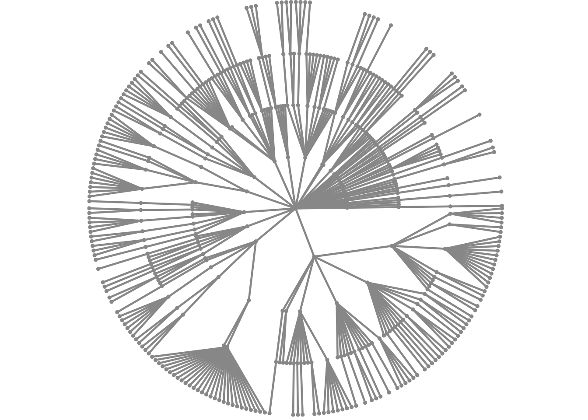
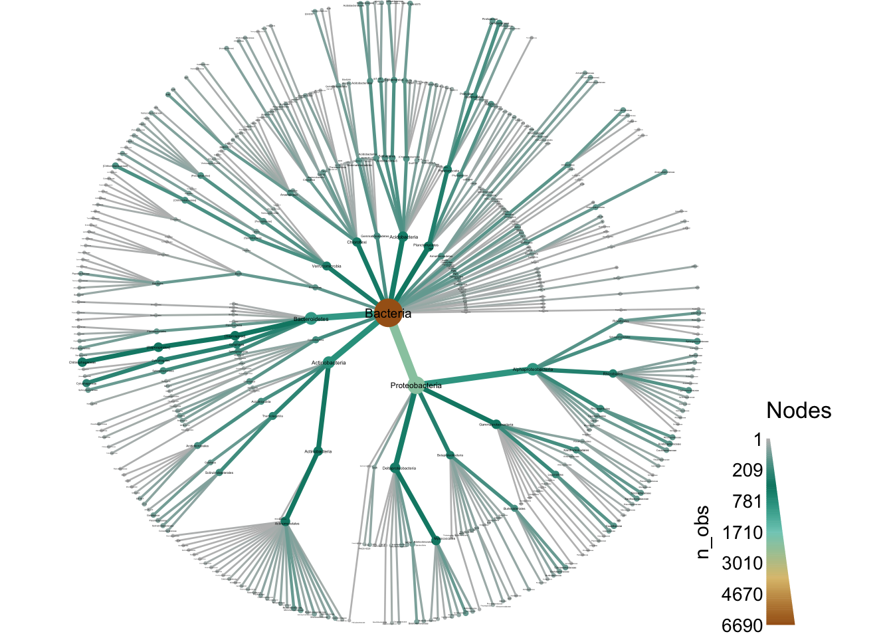
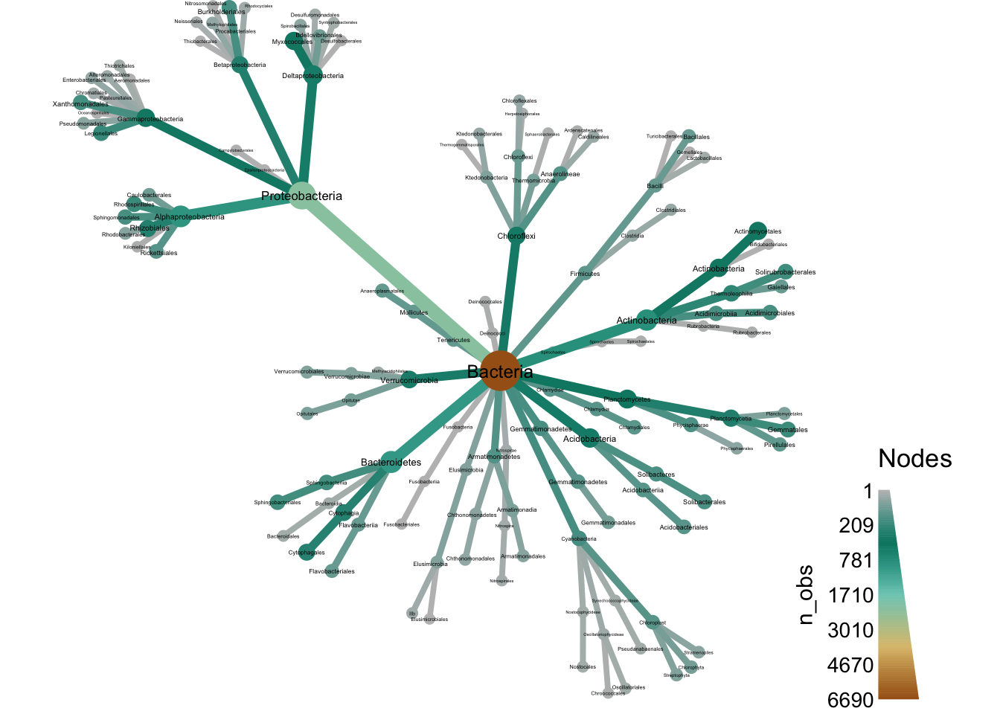
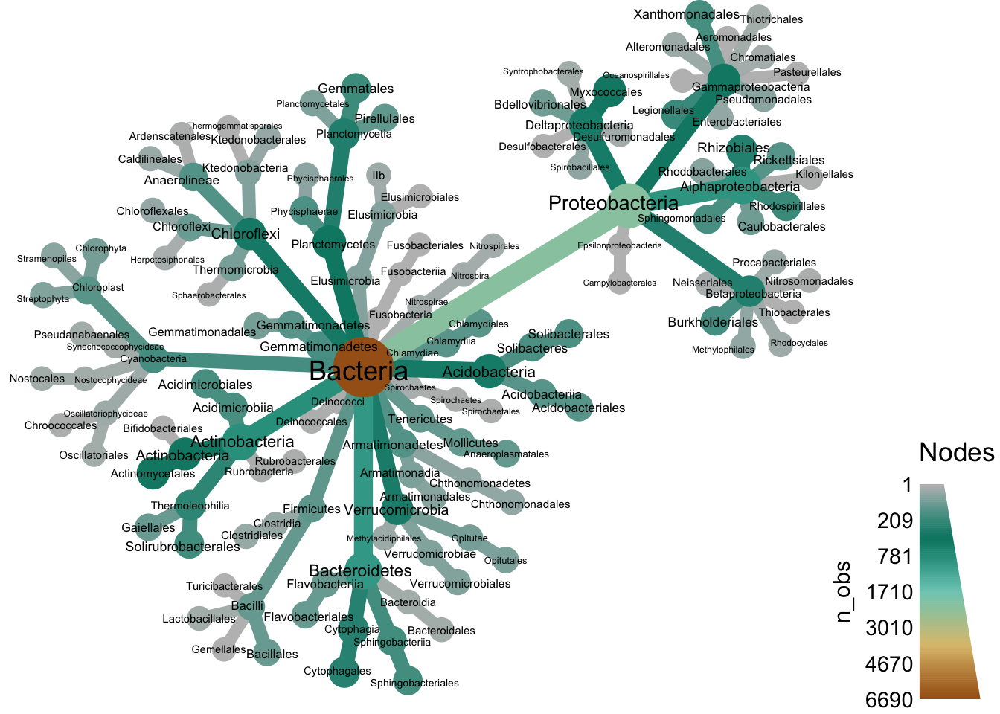
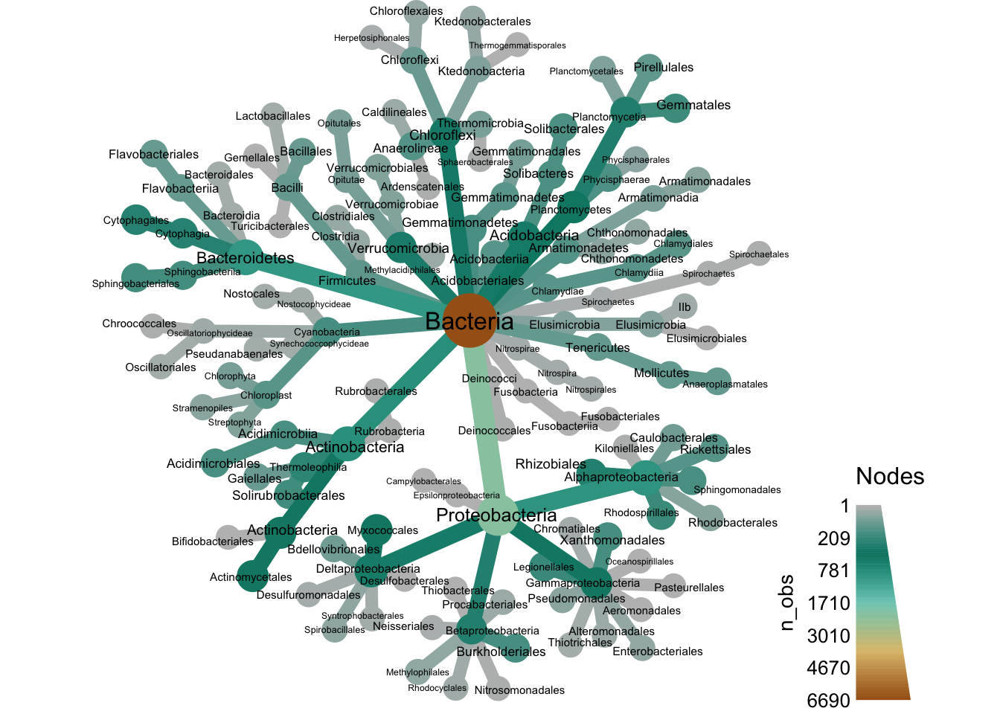

Plotting taxonomic data
Throughout this workshop we will be making many familiar types of graphs using ggplot2 and we will explain how they are made as we go. In this section however, we will focus on using the metacoder package to plot information on a taxonomic tree using color and size to display data associated with taxa.
Taxonomic data can be difficult to graph since it is hierarchical. For example, if you have abundance information for each taxon and want to graph it, what kind of plot do you use? Stacked bar charts and pie graphs are common choices, but these ignore the hierarchical nature of the data; typically only a single rank is graphed. For example the graph below is from the publication that described the data set we are working with:

Although this is a well constructed graph, its usefulness is limited by the nature of stacked barcharts. The reliance on color to differentiate taxa means that the maximum number of taxa that can be effectively displayed is limited by the number of colors that can be distinguished. This is typically around 10 or maybe 13 with careful selection, but definatly not more than 15. This limitation is likley the reason Wagner et al. (2016) chose to show phylum-level abundances and grouped some phyla into a “Low abundance” category, even though there might be interesting pattern in finer ranks (e.g. genus or species). Most publications either show only the most coarse ranks (e.g. phylum) or only the ~10 most abundant taxa when using stacked barcharts. As an alternative/complement to stacked barcharts, we have developed what we call “heat trees” to display statistics assocaited with taxa (e.g. abundance) in a tree format.
Load example data
If you are starting the workshop at this section, or had problems running code in a previous section, use the following code to load data used in this section. If obj and sample_data are already in your environment from a previous section, you can ignore the following command.
load("filtered_data.Rdata")Heat trees
The metacoder package implements “heat trees” to graph taxonomic data (Foster, Sharpton, and Grünwald (2017)). This visualization technique uses color and size of parts of a taxonomic tree to display numeric data associated with taxa. Below is an example of a heat tree showing the number of OTUs in all taxa down to the class level:
## Loading required package: taxa## This is metacoder verison 0.2.0.9007 (development version). If you use metacoder for published research, please cite our paper:
##
## Foster Z, Sharpton T and Grünwald N (2017). "Metacoder: An R package for visualization and manipulation of community taxonomic diversity data." PLOS Computational Biology, 13(2), pp. 1-15. doi: 10.1371/journal.pcbi.1005404
##
## Enter `citation("metacoder")` for a BibTeX entry for this citation.
This is a type of taxonomic tree where each node (the circles) is a taxon and the edges (lines) show hierarchical relationships between taxa. For example, the large Proteobacteria phylum node contains the Alphaproteobacteria and Gammaproteobacteria classes. This is a realtively small heat tree meant as a demonstration; much larger and more intricate ones would be more typical. We are going to go through the process of creating a figure like this one in this section. Although this might seem like complicated code to make this figure, code like this is typically the result of iterative small imporvements started from a simple base. We will imiate this process here for demonstration.
Lets start with simplest possible code.
heat_tree(obj)
This is not too useful, but at least its easy! Lets plot some data to make things more interesting. A good start is to plot the number of OTUs (or other types of taxon observations) with both the color and size of nodes. The taxon names are added as well
heat_tree(obj,
node_label = taxon_names,
node_size = n_obs,
node_color = n_obs)
The default layout is pretty cluttered with this amount of taxa (898), so the labels are not readable with saving the graph as a PDF and zooming in. With enough tweeking, we probalby could make a tree with all 898 taxa that looks good with a PDF viewer, but for this demonstation, we will try to make a plot that could be used in a publication with minimal zooming. So, lets remove all taxa below the order rank to cut down the number of taxa displayed. We will also save the output as a PDF so we can take a closer look at the output.
obj %>%
filter_taxa(taxon_ranks == "o", supertaxa = TRUE) %>% # subset to the class rank
heat_tree(node_label = taxon_names,
node_size = n_obs,
node_color = n_obs,
output_file = "plot_example_1.pdf")
If we zoom in on the output, we can see alot of taxa with odd names like “Ellin329” and “BD7−3”. During analysis such taxa might be important to see, but for publication purposes, most can probably be removed from the plot to make it easier to understand. We can filter those taxa out before plotting using a regular expression that only matches letters:
obj %>%
filter_taxa(grepl(pattern = "^[a-zA-Z]+$", taxon_names)) %>% # remove "odd" taxa
filter_taxa(taxon_ranks == "o", supertaxa = TRUE) %>% # subset to the class rank
heat_tree(node_label = taxon_names,
node_size = n_obs,
node_color = n_obs,
output_file = "plot_example_2.pdf")
Now we are getting to something more understandable. Finally, lets play with the layout to see if we can find one that spaces things out better. There are lots of layouts available, but only few produce reasonable results most of the time. Some of the better ones for this use include:
- reingold-tilford (the default)
- davidson-harel
- fruchterman-reingold
You only need to use the first few letters of each name. Lets look at these other two formats. First, fruchterman-reingold:
obj %>%
filter_taxa(grepl(pattern = "^[a-zA-Z]+$", taxon_names)) %>% # remove "odd" taxa
filter_taxa(taxon_ranks == "o", supertaxa = TRUE) %>% # subset to the class rank
heat_tree(node_label = taxon_names,
node_size = n_obs,
node_color = n_obs,
layout = "fr",
output_file = "plot_example_2.pdf")
These types of layouts have a random component to how they are made, so running the same code twice will produce different layouts. Try running the above code again to see this. We can force it to be the sample each time by settind the seed for the random number genertor used by R, as is done in the next example. This layout is not too bad, but does not make good use of space. Lets try davidson-harel:
set.seed(1) # you can choose any number. Each will produce a different layout
obj %>%
filter_taxa(grepl(pattern = "^[a-zA-Z]+$", taxon_names)) %>% # remove "odd" taxa
filter_taxa(taxon_ranks == "o", supertaxa = TRUE) %>% # subset to the class rank
heat_tree(node_label = taxon_names,
node_size = n_obs,
node_color = n_obs,
layout = "da",
output_file = "plot_example_2.pdf")
Thats a bit better, but there is one more thing we can try. The heat_tree functions allows you to set an “initial” layout that is used as the starting point for these other layouts. We have found the combination of “reingold-tilford” and “davidson-harel” to be space-efficient for large plots.
set.seed(2) # you can choose any number. Each will produce a different layout
obj %>%
filter_taxa(grepl(pattern = "^[a-zA-Z]+$", taxon_names)) %>% # remove "odd" taxa
filter_taxa(taxon_ranks == "o", supertaxa = TRUE) %>% # subset to the class rank
heat_tree(node_label = taxon_names,
node_size = n_obs,
node_color = n_obs,
initial_layout = "re", layout = "da",
output_file = "plot_example_2.pdf")
Now we have replicated our original plot! This kind of interative refinment is the best way to make these complex plots, and complex plots in general.
References
Foster, Zachary SL, Thomas J Sharpton, and Niklaus J Grünwald. 2017. “Metacoder: An R Package for Visualization and Manipulation of Community Taxonomic Diversity Data.” PLoS Computational Biology 13 (2). Public Library of Science: e1005404. https://doi.org/10.1371/journal.pcbi.1005404.
Wagner, Maggie R, Derek S Lundberg, G Tijana, Susannah G Tringe, Jeffery L Dangl, and Thomas Mitchell-Olds. 2016. “Host Genotype and Age Shape the Leaf and Root Microbiomes of a Wild Perennial Plant.” Nature Communications 7. Nature Publishing Group: 12151.

Analysis of Microbiome Community Data in R by The Grunwald lab and the USDA Horticultural Crops Research Unit is licensed under a Creative Commons Attribution-ShareAlike 4.0 International License.
Based on a work at https://github.com/grunwaldlab/analysis_of_microbiome_community_data_in_r.